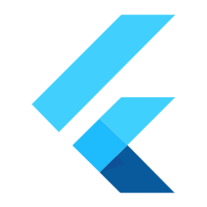

Compétences
Langages
Outils

Flutter
Langages
Outils
Stage L3
Néolink, Blois
Stage de fin de Licence dans le domaine de l'informatique. Lors de cette expérience, j'ai notamment pu effectuer de la maintenance (résolution de bugs) en PHP sur le framework de l'entreprise. J'ai travaillé auprès de développeurs front et back.
Stage DUT
CNRS, Orléans
Stage de fin de DUT dans le domaine de la communication. J'ai notamment eu à réaliser la charte graphique et des visuels (roll-up, dépliant...) afin de lancer la stratégie de communication pour le projet scientifique MATEX porté par le CNRS et la région Centre-Val de Loire.
Application mobile Android réalisée lors de ma 1re année de Master. Le projet consiste en un jeu permet aux joueurs de creuser sur leur position afin de trouver des objets.
Application mobile multiplateforme réalisée lors de ma 1re année de Master informatique. Cette application permet de consulter les différents évènements prévus pour les Journées Portes Ouvertes de l'Université d'Orléans.
Application mobile multiplateforme réalisée lors de ma 1re année de Master informatique. Le but de cette application et de permettre à l'utilisateur de gérer une liste de tâches.